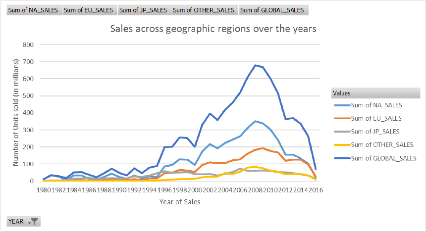
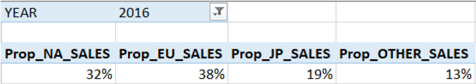
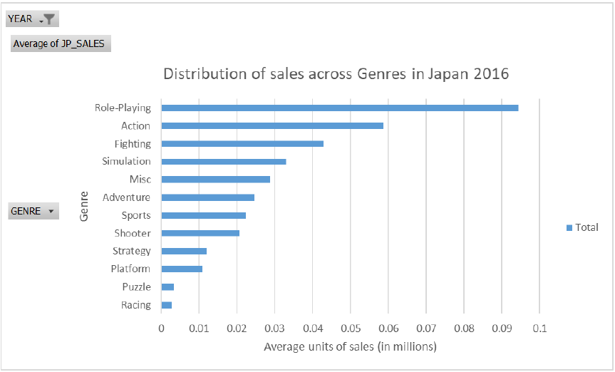
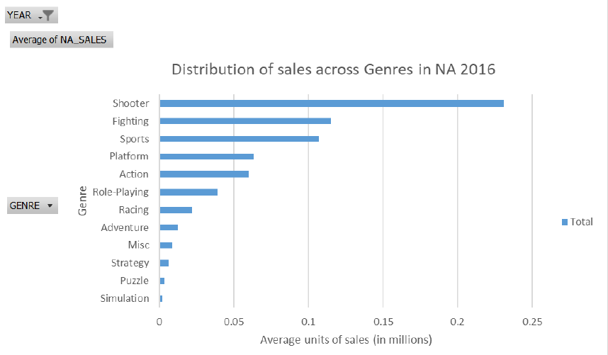
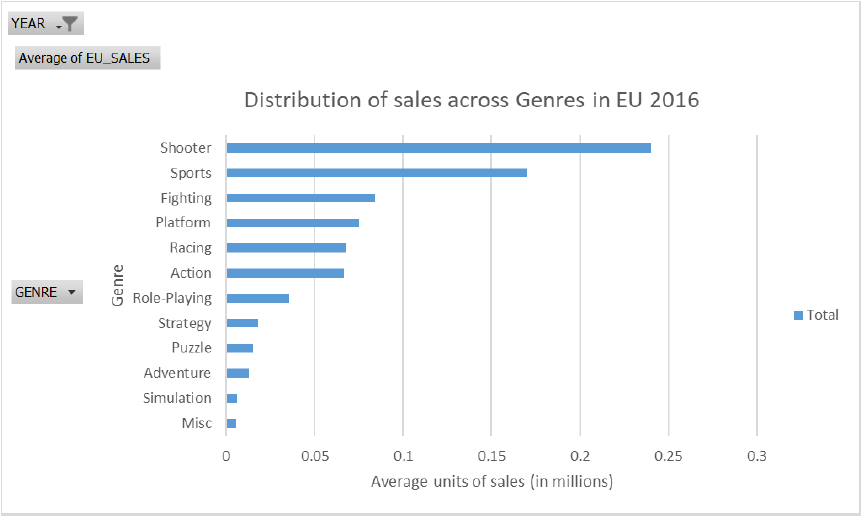
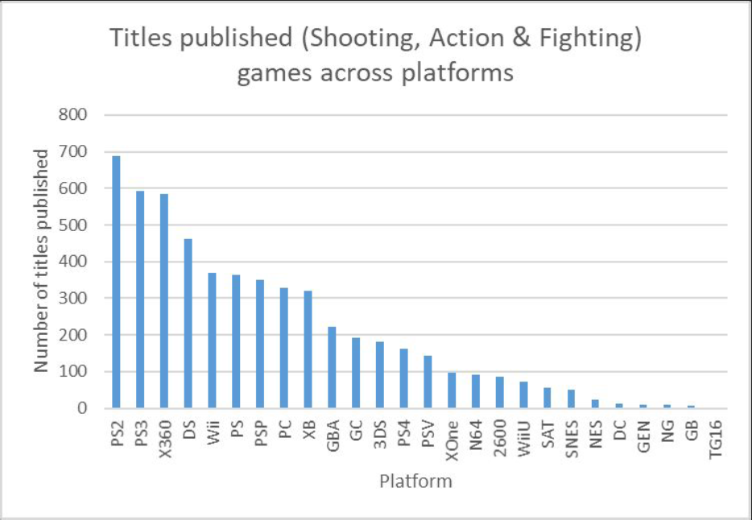

GameCo : A Sales Study
Overview
GameCo is a video game company and the goal is to analyze historical data and trends to make informed decisions on the marketing expenditure of the company in the year 2017. The data set has information on the various genres, platforms, publishers & regions, and an analysis on the consumer behavior is performed.
Tools
This project was analyzed with the help of Microsoft Excel.
Dataset
The dataset outlines the sales of video game units across diverse Genres, Platforms, Years (from 1980 to 2016) and Publishers across the globe (specifically North America, European Union, Japan and Others). The sales are measured in millions. This dataset had to be cleaned before further analysis could be conducted. This included removing rows where the ‘Publisher’ information was missing and imputing blank cells in the sales columns with the mean value of the respective columns. How sales vary in these geographic regions across three characteristics, namely Genre & Platform are of particular interest.
Analysis
Firstly, a bird’s eye view of how the total sales performance across the different regions vary with the help of a line chart.
Based on the line graph above, we can see a decline in sales globally, plummeting from its peak in late 2000s and reaching the lowest in the 21st century in 2016. This pattern holds true for all regions, although Japan seems to have had a relatively consistent performance. From this observation, we can see that there is a need for the marketing budget to be distributed in such a manner as to maximise return on investment.
- Sales Forecasting Approach: Focus on 2016 sales data to predict sales for 2017 and beyond.
- Data Filtering: Extract relevant data to analyze market share across regions.
- Calculated Fields: Compute regional sales proportions by dividing regional sales by total global sales in 2016.
- Key Insight: North America and the EU together account for 70% of total sales.
- Strategic Consideration: Identifying high-performing game genres in underperforming regions could guide budget allocation to boost sales.
Japan
- Popular Genres in Japan: Role-Playing, Action, and Fighting games.
- Marketing Strategy: Consider increasing promotion for these genres.
- Sales Assumption: Higher game publication could lead to increased sales.
- Focus on Market Share: Best-selling genres accounting for at least 70% of market share from 2000-2016.
- Trend Analysis: Recent years provide a more accurate representation of market trends.
Scatterplots are good for detecting correlations, if any. Comparing the two scatterplots side-by-side, we can see that although there is a disparity between the number of titles published across the four genres considered and the sales figures. This could potentially mean that customers are unaware of the new titles published. Stronger marketing campaigns could boost sales. Therefore, promotion of these four best selling genre games in Japan is something the marketing team could certainly look into.
North America
- Top Genres in North America (2016): Shooter, Fighting, and Sports games account for 68% of total sales.
- Market Pattern: Unlike Japan, NA shows a different sales trend.
- Sales Trend: Despite fewer new titles since 2012, sales remained high (except in 2016).
- Possible Market Saturation: High sales stability suggests a mature market for these genres.
- Strategic Opportunity: Explore less-represented genres for potential revenue growth.
European Union
A similar story as was told in the case of NA can be told here. The grouping of genres is slightly different. Here, to make up the 70% market share mark, a fourth genre has been included in the grouping. Like in NA, EU also shows a state of saturation and the marketing team could look into other less selling genres.
Observations & Next Steps
Across the different regions, it can be observed that Shooting, Action & Fighting games seem to be quite popular. Plotting a bar graph might help see patterns in the production of these games across various platforms.
- Budget Limitation: Focus on maximizing return on investment (ROI).
- Market Share Analysis: Prioritize best-selling genres (≥70% market share) by region.
- Alternative Strategies: Expanding less popular genres could also drive revenue growth.
- Platform Trends: Best-selling genres are still mostly on older consoles (PS2, PS3, X360).
- Opportunity for Growth: Shifting focus to newer consoles (PS4, XOne, WiiU) could boost sales as old-gen consoles become obsolete.